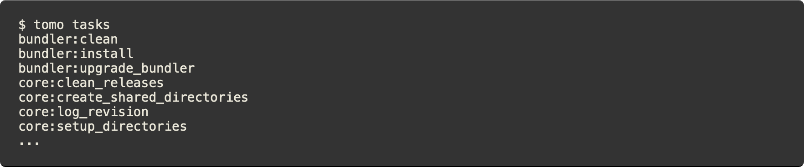
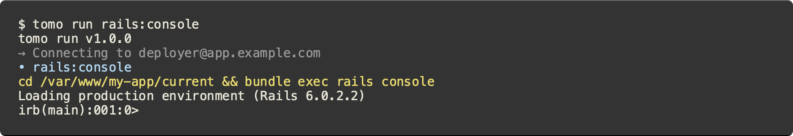
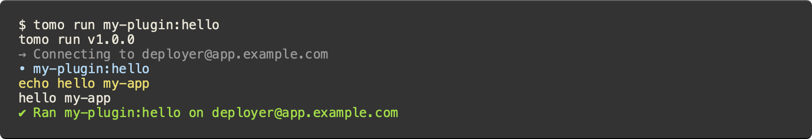

Tomo


Tomo is a friendly command-line tool for deploying Rails apps.
üíª Rich command-line interface with built-in bash completions
☁️ Multi-environment and role-based multi-host support
üíé Everything you need to deploy a basic Rails app out of the box
üîå Easily extensible for polyglot projects (not just Rails!)
üìö Quality documentation
üî¨ Minimal dependencies
→ See how tomo compares to other Ruby deployment tools like Capistrano and Mina.
- Quick start
- Usage
- Extending tomo
- Tutorials
- Blog posts
- Reference documentation
- FAQ
- Support
- License
- Code of conduct
- Contribution guide
Quick start
Installation
Tomo is distributed as a ruby gem. To install:
$ gem install tomo
üí° Protip: run
tomo completion-scriptfor instructions on setting up bash completions.
Configuring a project
Tomo is configured via a .tomo/config.rb file in your project. To get started, run tomo init to generate a configuration that works for a basic Rails app.

An abbreviated version looks like this:
# .tomo/config.rb
plugin "git"
plugin "bundler"
plugin "rails"
# ...
host "user@hostname.or.ip.address"
set application: "my-rails-app"
set deploy_to: "/var/www/%{application}"
set git_url: "git@github.com:my-username/my-rails-app.git"
set git_branch: "main"
# ...
setup do
run "git:clone"
run "git:create_release"
run "bundler:install"
run "rails:db_schema_load"
# ...
end
deploy do
run "git:create_release"
run "core:symlink_shared"
run "core:write_release_json"
run "bundler:install"
run "rails:assets_precompile"
run "rails:db_migrate"
run "core:symlink_current"
# ...
end
Next steps
→ The reference docs have a complete guide to tomo configuration.
→ Check out the Deploying Rails From Scratch tutorial for a step-by-step guide to using tomo with a real app.
Usage
Once your project is configured, you can:
- Run
tomo setupto prepare the remote host for its first deploy. - Run
tomo deployto deploy your app. - Use
tomo runto invoke one-off tasks, like launching a Rails console.
üí° Protip: add
-hor--helpwhen running any of these commands to see detailed docs and examples.
tomo setup
tomo setup prepares the remote host for its first deploy by sequentially running the
setup list of tasks specified in .tomo/config.rb. These tasks typically create directories, initialize data stores, install prerequisite tools, and perform other one-time actions that are necessary before a deploy can take place.
Out of the box, tomo will:
- Configure necessary environment variables, like
RAILS_ENVandSECRET_KEY_BASE - Install Ruby, Bundler, Node, Yarn, and dependencies
- Create all necessary deployment directories
- Create the Rails database, load the schema, and insert seed data
→ Here is the default list of tasks invoked by the setup command.
→ The tomo setup section of the reference docs explains supported command-line options.
tomo deploy
Whereas tomo setup is typically run once, you can use tomo deploy every time you want to deploy a new version of your app. The deploy command will sequentially run the deploy list of tasks specified in .tomo/config.rb. You can customize this list to meet the needs of your app. By default, tomo runs these tasks:
- Create a release (using the git:create_release task)
- Build the project (e.g. bundler:install, rails:assets_precompile)
- Migrate data to the meet the requirements of the new release (e.g. rails:db_migrate)
- Make the new release the “current” one (core:symlink_current)
- Restart the app to use the new current release (e.g. puma:restart)
- Perform any cleanup (e.g. bundler:clean)
üí° Protip: you can abbreviate tomo commands, like
tomo dfortomo deployortomo sfortomo setup.
→ Here is the default list of tasks invoked by the deploy command.
→ The tomo deploy section of the reference docs explains supported command-line options, like --dry-run.
tomo run [TASK]
Tomo can also run individual remote tasks on demand. You can use the tasks command to see the list of tasks tomo knows about.

One of the built-in Rails tasks is rails:console, which brings up a fully-interactive Rails console over SSH.

üí° Protip: you can shorten this as
tomo rails:console(theruncommand is implied).
Extending tomo
Tomo has a powerful plugin system that lets you extend tomo by installing Ruby gems (e.g. tomo-plugin-sidekiq). You can also define plugins on the fly within your project by adding simple .rb files to .tomo/plugins/. These plugins can define tasks as plain ruby methods. For example:
# .tomo/plugins/my-plugin.rb
def hello
remote.run "echo", "hello", settings[:application]
end
Load your plugin in config.rb like this:
# .tomo/config.rb
plugin "./plugins/my-plugin.rb"
And run it!

→ The Writing Custom Tasks tutorial has an in-depth explanation of how plugins work.
→ The TaskLibrary API is tomo’s DSL for building tasks.
→ The Publishing a Plugin tutorial explains how to package your plugin as a Ruby gem to share it with the community.
Tutorials
Blog posts
Reference documentation
- Configuration
- Commands
- Plugins
- API
FAQ
What does the unsupported option "accept-new" error mean?
By default, tomo uses the “accept-new” value for the StrictHostKeyChecking option, which is supported by OpenSSH 7.6 and newer. If you are using an older version, this will cause an error. As a workaround, you can override tomo’s default behavior like this:
# Replace "accept-new" with something compatible with older versions of SSH
set ssh_strict_host_key_checking: true # or false
Can I deploy multiple apps to a single host?
Tomo relies on the host user’s bash profile for various things, like setting environment variables and initializing rbenv and nodenv. This makes it impractical to deploy multiple apps to a single host using the same deploy user.
The solution is to create multiple users on the remote host, and then configure a different user for deploying each app. That way each user can have its own distinct environment variables and you can easily configure each app differently without risking conflicts. Refer to the tomo Rails tutorial for instructions on creating a deploy user.
E.g. app1 would be configured to deploy as:
host "app1@example.com"
And app2 would be configured to deploy as:
host "app2@example.com"
Next run tomo setup for both apps; this will set everything up for both users on the remote host (environment variables, rbenv, etc.). You can now deploy both apps to the same host, with the confidence that their configurations will be kept cleanly separated.
Does tomo support git submodules?
No, not out of the box. However, you can extend tomo with an additional task for submodules; see the solution in PR #220 suggested by @numbcoder.
Support
This project is a labor of love and I can only spend a few hours a week maintaining it, at most. If you’d like to help by submitting a pull request, or if you’ve discovered a bug that needs my attention, please let me know. Check out CONTRIBUTING.md to get started. Happy hacking! ‚ÄîMatt
License
The gem is available as open source under the terms of the MIT License.
Code of conduct
Everyone interacting in the Tomo project’s codebases, issue trackers, chat rooms and mailing lists is expected to follow the code of conduct.
Contribution guide
Interested in filing a bug report, feature request, or opening a PR? Excellent! Please read the short CONTRIBUTING.md guidelines before you dive in.